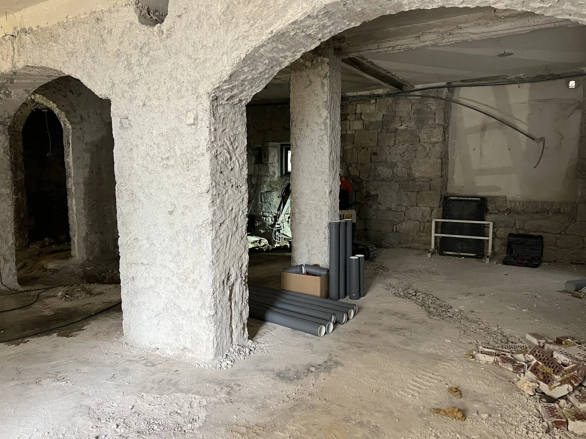
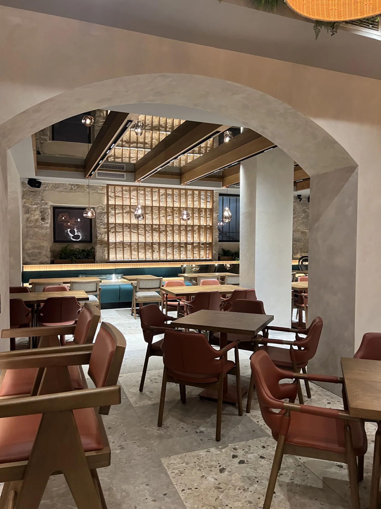
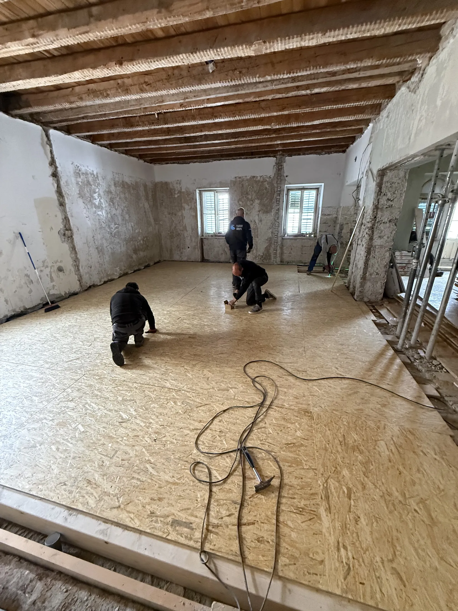
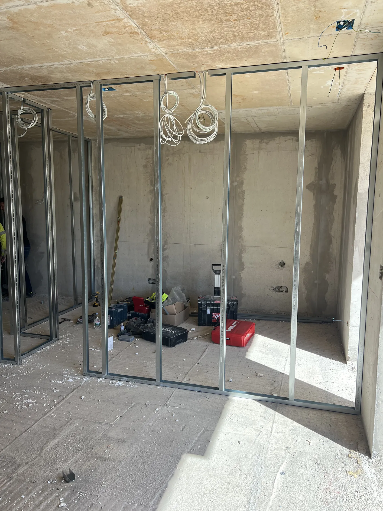
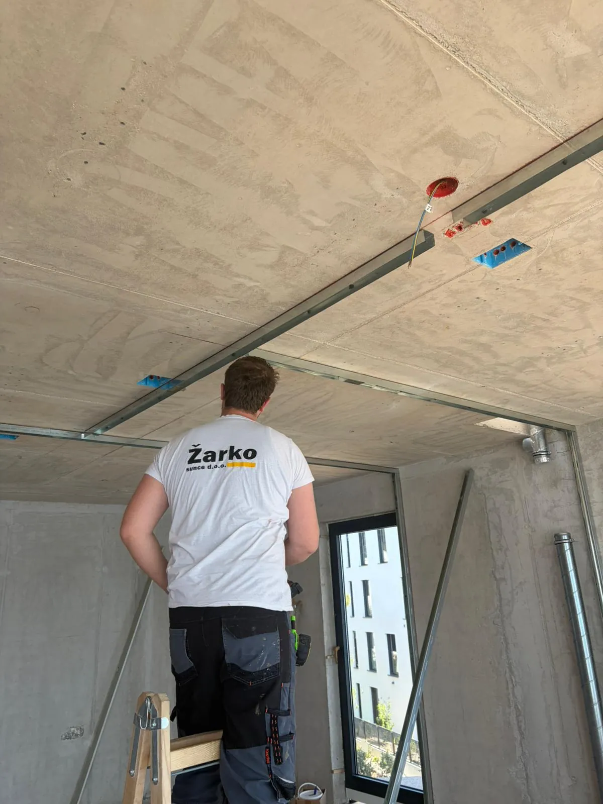
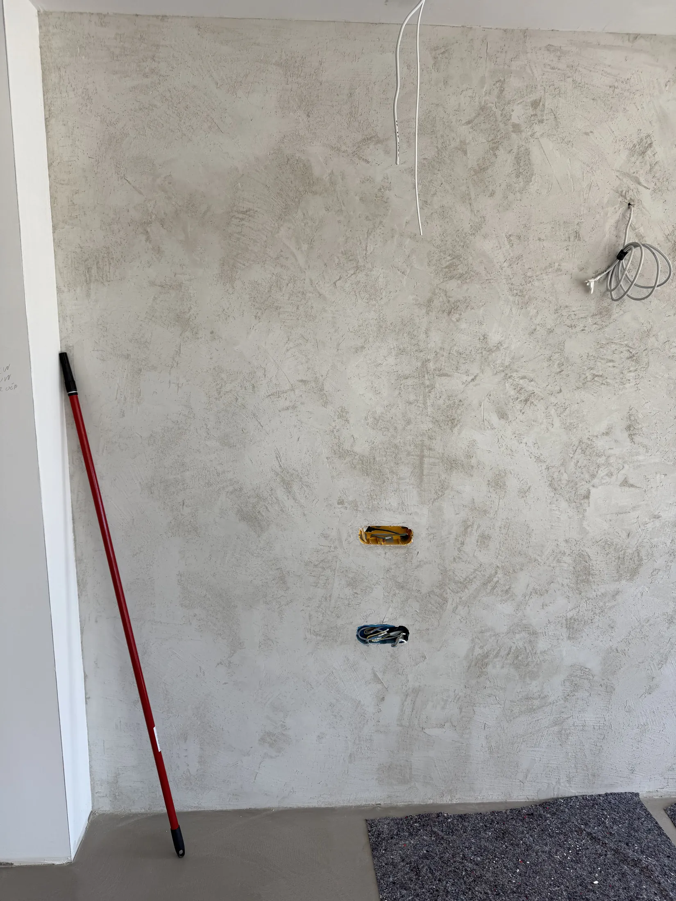
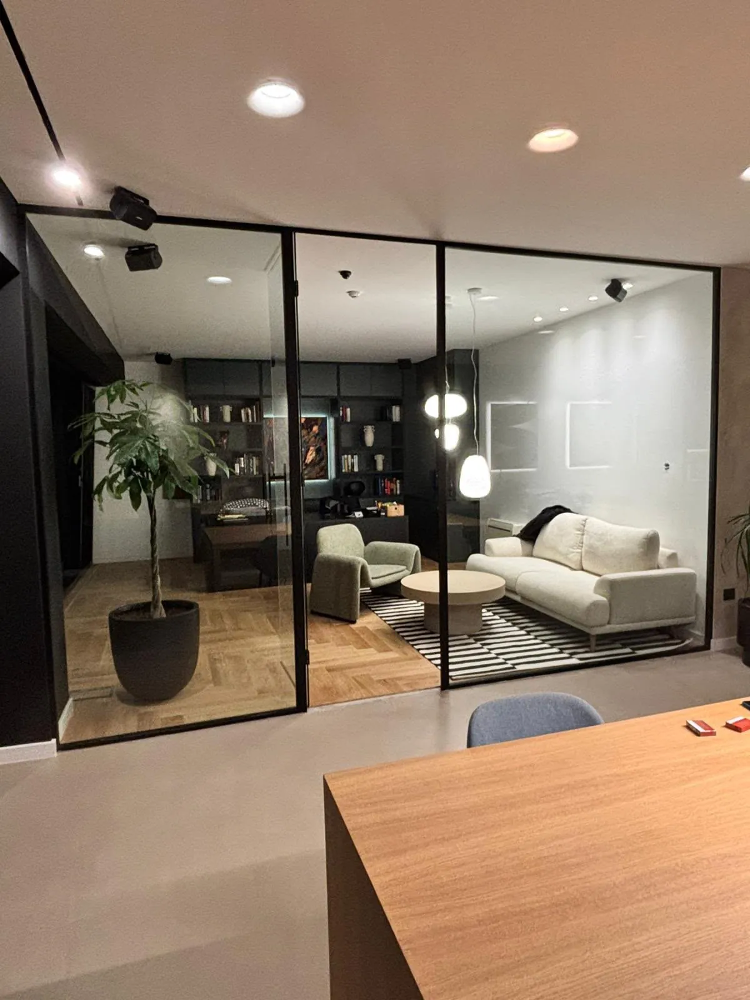
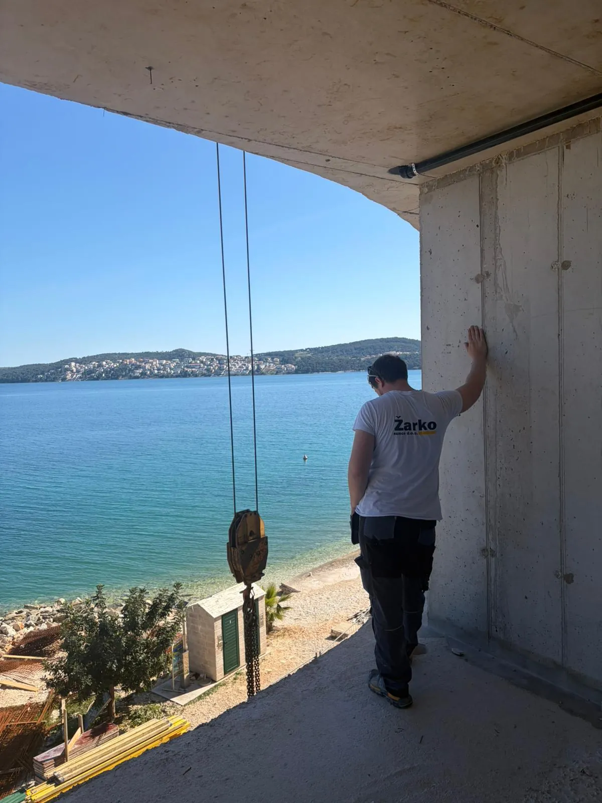

Restoran Soul Kitchen — od grubih radova do gotovog interijera.
Adaptacije i završni radovi
Split i okolica

Nova raspodjela, novi život prostora.

Knauf suhomontažni sustavi.

Rasvjeta i skrivene instalacije.

Zidovi bez mane.

Jedan dogovor, cijeli projekt.

Jedna osoba za sve dogovore.
Jasna ponuda, bez skrivenih stavki.